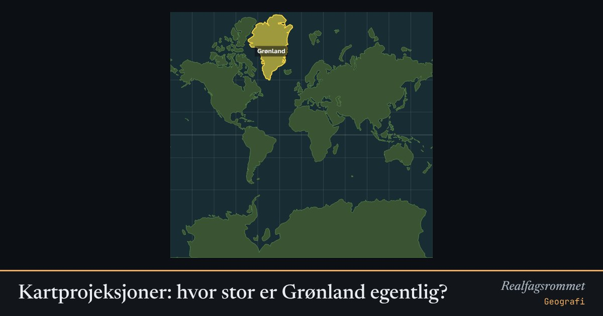

Kartprojeksjoner: hvor stor er Grønland egentlig?
Jorda er rund, og et flatt kart må alltid strekke noe. Mercator-kartet beholder formene, men blåser opp alt som ligger langt fra ekvator. Dra Grønland mot ekvator og se den krympe.
Start animasjonen
Formler
Om animasjonen
Mercator brukes i navigasjon og nettkart fordi vinkler og former blir riktige lokalt. Prisen er at arealer blåses opp med faktoren . Ved 70° nord blir arealet vist over åtte ganger for stort.
På Mercator ser Grønland nesten like stor ut som Afrika. I virkeligheten er Afrika omtrent 14 ganger større. Når du drar landet, flyttes det langs jordkula, så den virkelige størrelsen og formen beholdes.
Mollweide er flatetro: alle land vises med riktig areal i forhold til hverandre, men formene blir skjeve mot kantene. Ekvidistant (plate carrée) har like store ruter i lengde- og breddegrad.
Slå på sirklene. Alle sirklene er like store på jorda, så forskjellene du ser, er forvrengningen i kartet. Arealene her er regnet ut fra et forenklet kart og er omtrentlige.
Prøv dette
- Flytt Grønland til ekvator. Hvor mange ganger mindre blir den på Mercator-kartet?
- Sammenlign arealet til Afrika og Grønland. Hvorfor ser de nesten like store ut på Mercator?
- Hvorfor brukes Mercator i Google Maps, selv om arealene blir feil?
- Slå på sirklene og bytt mellom projeksjonene. Hvilken projeksjon bevarer arealene? Hvilken bevarer formene?
Kompetansemål
- Geografi: Kart, kartprojeksjoner og geografiske verktøy